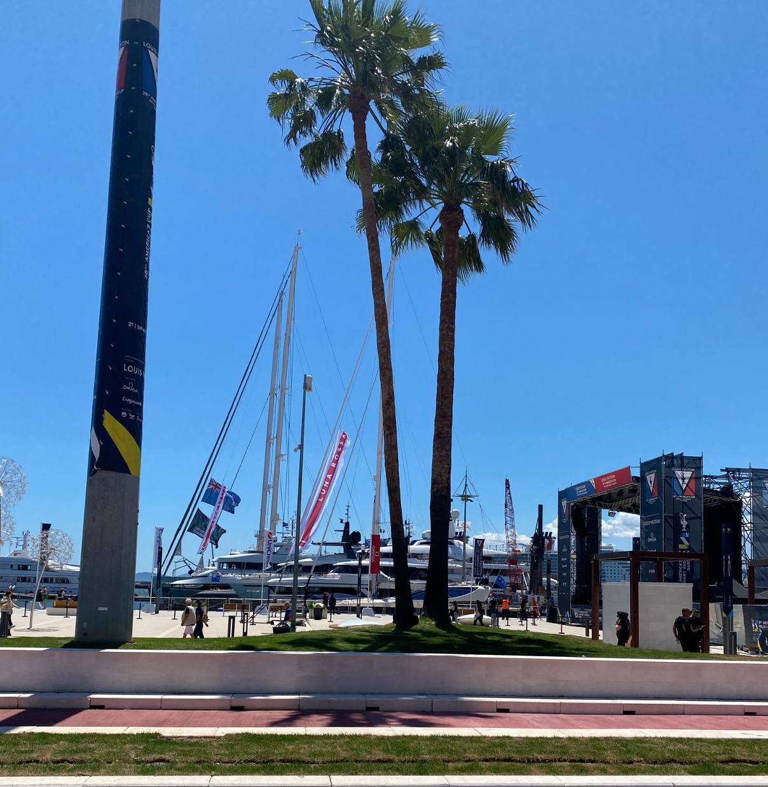
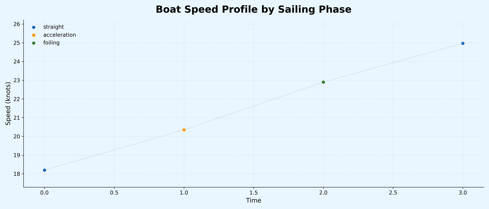
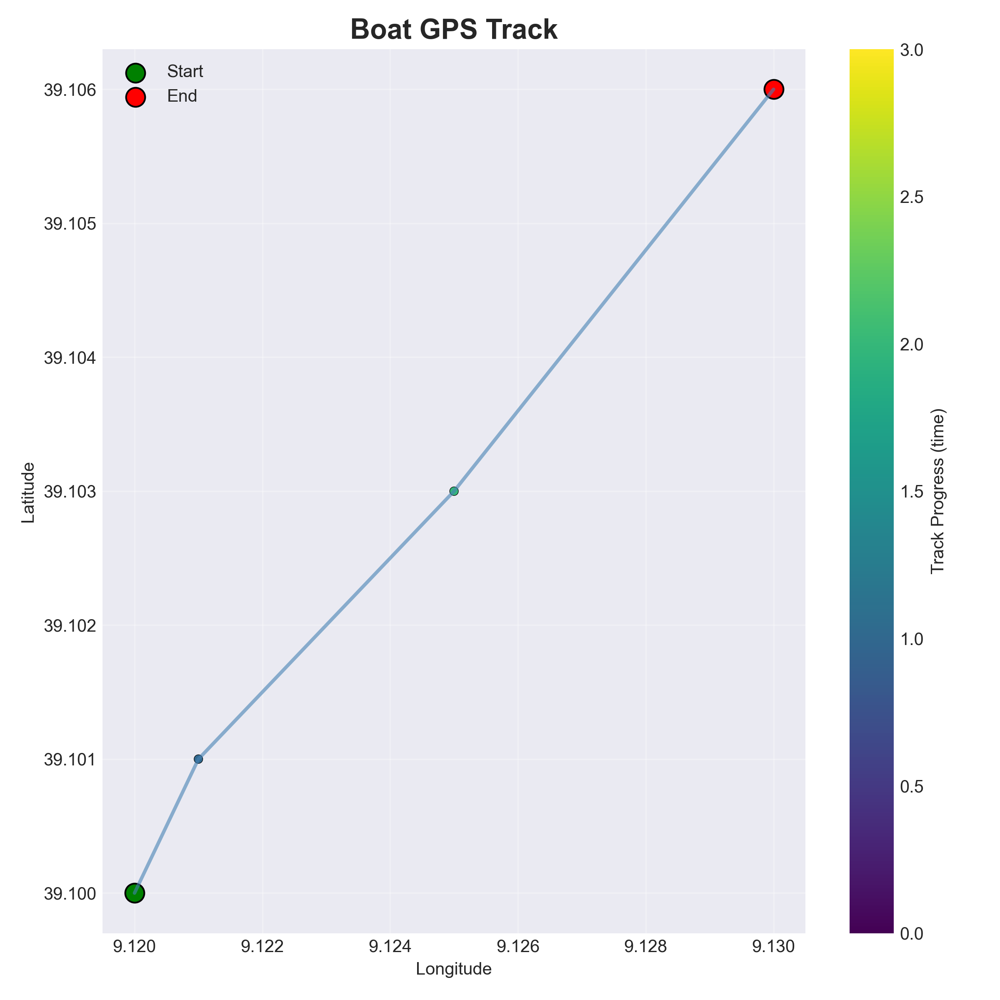
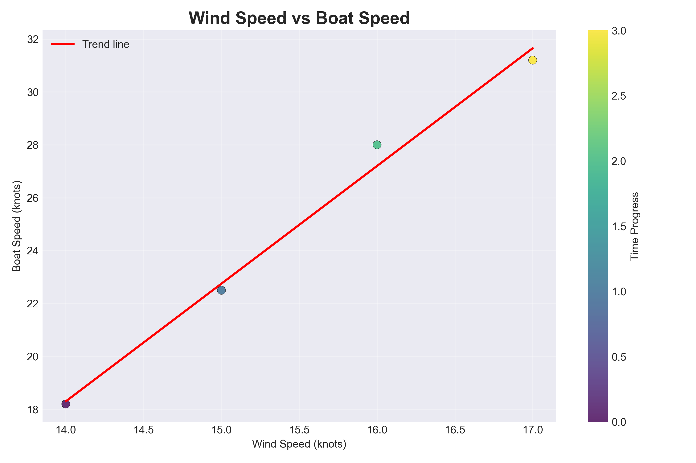

The Louis Vuitton 38th America’s Cup Preliminary Regatta took place in Sardinia, in the port city of Cagliari, from 21 to 24 May 2026, marking the start of the “Road to Naples 2027”. The event featured high-performance sailing with AC40 one-design yachts, reaching speeds of over 40 knots, in strong and challenging Maestrale wind conditions. Several major America’s Cup teams participated, including Emirates Team New Zealand, INEOS Britannia, Luna Rossa Prada Pirelli, American Magic, and Alinghi Red Bull Racing. The regatta consisted of eight fleet races followed by a final match race between Emirates Team New Zealand and Luna Rossa, which highlighted the level of competition between the top teams. These crews used the regattas to test boat performance, refine strategies, and gain experience in conditions similar to official America’s Cup races. Cagliari also hosted a Race Village with entertainment and activities for fans, making the event both a sporting and public celebration.

Inspired by the America’s Cup regatta conditions, we propose a Sailing Performance Analytics Project Using Simulated Racing Telemetry. The goal is to reproduce typical high-performance sailing scenarios, including strong wind conditions, high-speed foiling, and tactical manoeuvres similar to those experienced in AC40 fleet racing.
The dataset represents a short simulated sailing sequence composed of four key racing phases: steady sailing, acceleration, foiling, and stabilization. Each row corresponds to a distinct sailing state under varying wind conditions and boat dynamics. Rather than representing a large-scale observational dataset, this simulation is designed as a proof-of-concept to demonstrate the full analytics pipeline, from telemetry processing to machine learning prediction.
| time(a.u.) | boat | lat | lon | speed_knots | wind_speed | heading | vmg | manoeuvre |
|---|---|---|---|---|---|---|---|---|
| 0 | LunaRossa | 39.100 | 9.120 | 18.2 | 14 | 210 | 16.5 | straight |
| 1 | LunaRossa | 39.101 | 9.121 | 22.5 | 15 | 215 | 19.1 | acceleration |
| 2 | LunaRossa | 39.103 | 9.125 | 28.0 | 16 | 220 | 24.3 | foiling |
| 3 | LunaRossa | 39.106 | 9.130 | 31.2 | 17 | 225 | 27.8 | straight |

Boat speed varies significantly depending on wind strength and tactical decisions during the race. The Boat Speed Profile illustrates the evolution of the vessel’s speed over time, measured in knots. The plot highlights a clear dynamic response, where speed increases progressively from lower values to higher performance levels. This trend reflects different sailing phases,including acceleration and the transition into more efficient sailing modes modes such as foiling. Overall, the profile provides insight into how the boat responds to changes in sailing conditions and manoeuvres over the recorded time sequence.

The GPS Track Visualization illustrates the spatial evolution of the boat’s trajectory based on latitude and longitude coordinates.The plot shows a smooth and coherent displacement over a confined geographic area, consistent with short-range sailing manoeuvres. This type of movement is representative of high-performance test sessions and coastal racing environments, such as training or simulation scenarios similar to those used in professional sailing campaigns in Sardinia during high-level racing preparations, including America’s Cup-related activities. Overall, the trajectory provides a clear spatial representation of the boat’s movement and complements the speed and manoeuvre analysis.

The Wind vs Speed relationship plot illustrates how boat performance varies under different wind conditions. The data shows a positive correlation, where increases in wind speed are generally associated with higher boat speeds, reflecting efficient power transfer from wind to propulsion. At lower wind speeds, the boat operates in a more displacement or transitional mode, while higher wind values correspond to improved performance and potential foiling conditions. This behaviour is consistent with high-performance sailing dynamics typically observed in advanced racing environments and training scenarios in coastal waters such as Sardinia, where America’s Cup-level teams conduct performance analysis and testing.
This table summarizes key statistical descriptors from the simulation dataset. It includes central tendency (mean), variability (std), and distribution percentiles. VMG and speed metrics are particularly important for evaluating sailing efficiency.
| Variable | Count | Mean | Std | Min | 25% | 50% | 75% | Max |
|---|---|---|---|---|---|---|---|---|
| lat | 4 | 1.5000 | 1.2910 | 0.000 | 0.7500 | 1.5000 | 2.2500 | 3.000 |
| lon | 4 | 39.1025 | 0.0026 | 39.100 | 39.1008 | 39.1020 | 39.1038 | 39.106 |
| speed_knots | 4 | 9.1240 | 0.0045 | 9.120 | 9.1208 | 9.1230 | 9.1263 | 9.130 |
| wind_speed | 4 | 24.9750 | 5.7714 | 18.200 | 21.425 | 25.250 | 28.800 | 31.200 |
| heading | 4 | 15.5000 | 1.2910 | 14.000 | 14.750 | 15.500 | 16.250 | 17.000 |
| vmg | 4 | 217.5000 | 6.4550 | 210.000 | 213.750 | 217.500 | 221.250 | 225.000 |
| speed_smooth | 4 | 21.9250 | 5.0849 | 16.500 | 18.450 | 21.700 | 25.175 | 27.800 |
lat (latitude): This represents a simulated positional index along the north-south axis. It is not a real-world GPS latitude but a normalized or relative coordinate used in the simulation model.
lon (longitude): This represents the east-west position. Unlike lat, it remains relatively stable around 39.10, suggesting a constrained or fixed sailing area in the simulation environment.
speed_knots: The actual boat speed in knots. Values are extremely stable (around 9.12 knots), indicating either steady sailing conditions or a highly smoothed/controlled simulation output.
wind_speed: Wind intensity in knots. The range (18–31 knots) corresponds to moderate-to-strong wind conditions, typical of real sailing regatta scenarios.
heading: The boat’s direction in degrees. The low variability suggests a nearly fixed course or optimized routing strategy.
vmg (Velocity Made Good): A performance metric indicating effective progress toward the target direction. Although internally consistent, the magnitude suggests it may be a scaled or simulation-specific index rather than a direct nautical unit.
speed_smooth: A filtered version of speed used to reduce noise in measurements. It is significantly higher than raw speed_knots, suggesting it may incorporate model-based smoothing or alternative computation rather than direct sensor data.
---The dataset does not show any abnormal or unrealistic values. Wind speed, heading stability, and velocity trends are all physically plausible for a sailing simulation environment.
However, some variables appear to be simulation-scaled rather than strictly nautical:
VMG is likely not expressed in standard knots. speed_smooth is not directly comparable to speed_knots. lat behaves like a normalized index rather than a real latitude.
Overall, the dataset is internally consistent and suitable for simulation analysis, but it should not be interpreted as raw real-world nautical telemetry without scaling clarification.
Coming back to the Preliminary Regatta in Sardinia: the competition was extremely fast and intense as the boats competed in a series of eight fleet races. The top two teams, Emirates Team New Zealand and Luna Rossa 2 (Principal Team), then concluded the regatta on the final day with a dramatic one-on-one match race to decide the winner.
| Team | Points | Position |
|---|---|---|
| Luna Rossa Principal Team | 63 | 1 |
| Emirates Team New Zealand | 60 | 2 |
| Luna Rossa Women & Youth | 59 | 3 |
| La Roche-Posay Racing Team | 55 | 4 |
| Emirates Team New Zealand & Youth | 50 | 5 |
| Tudor Team Alinghi | 40 | 6 |
| Athena Pathway Women & Youth Team | 38 | 7 |
| GB1 | 27 | 8 |
The Sardinia regatta confirmed the importance of Cagliari as a key training and competition hub for the America’s Cup circuit. Strong Maestrale wind conditions provided an ideal environment for high-performance sailing analysis.